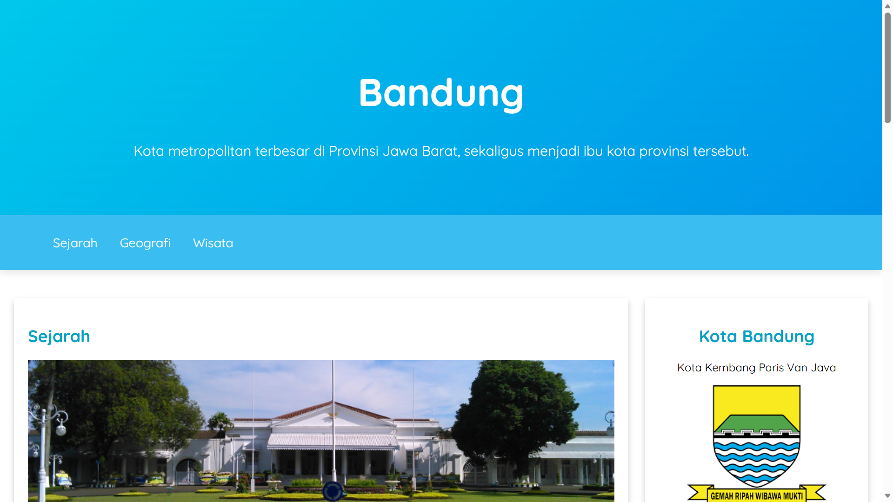
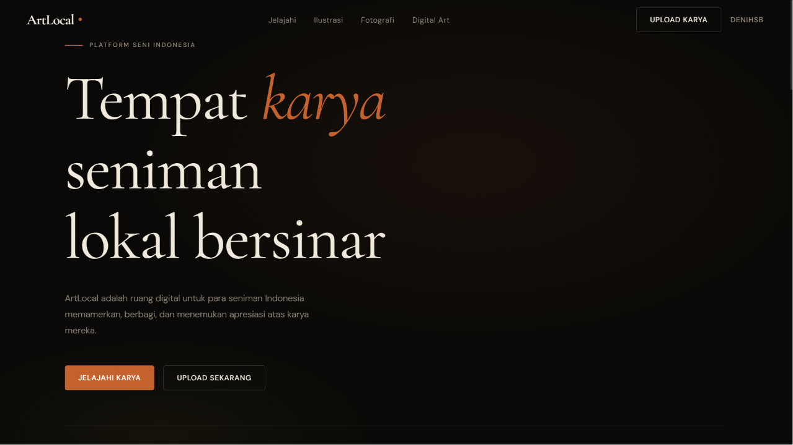
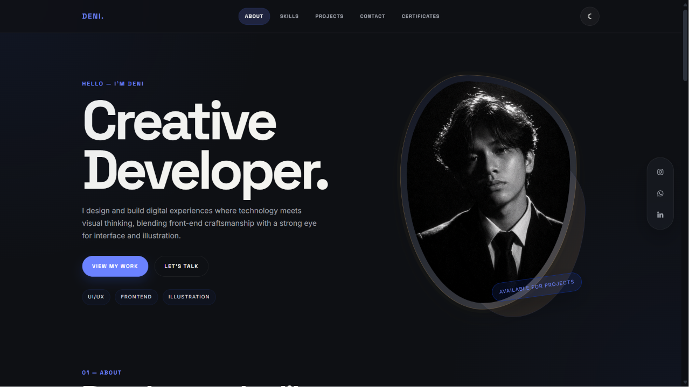
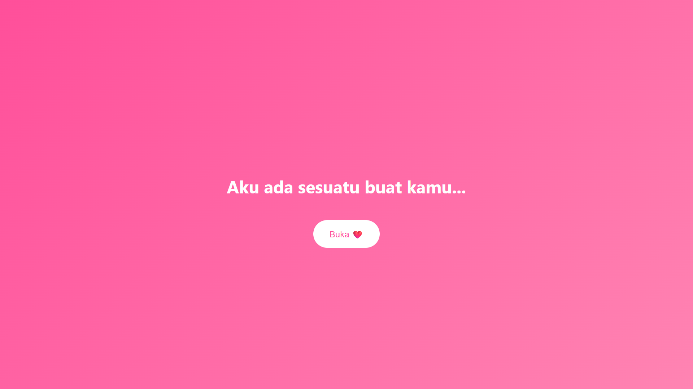
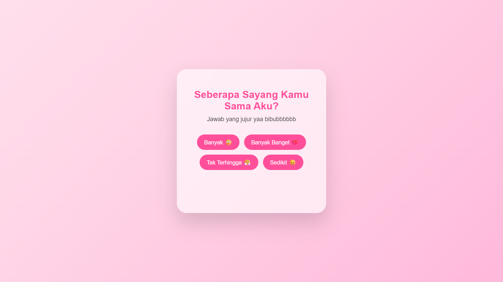
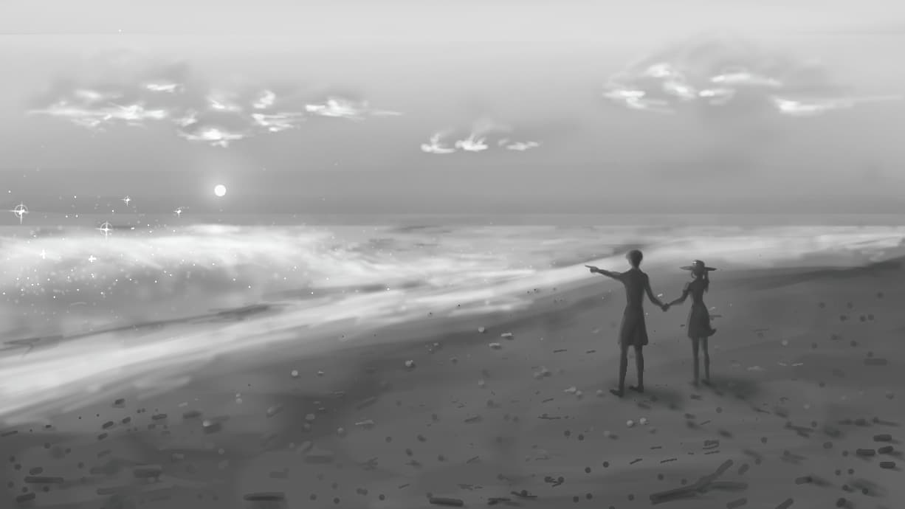
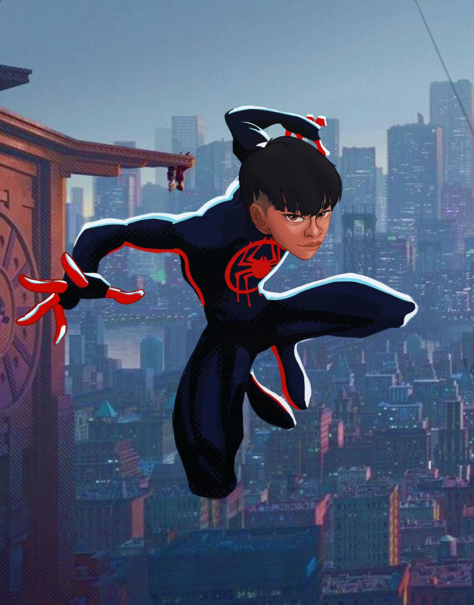
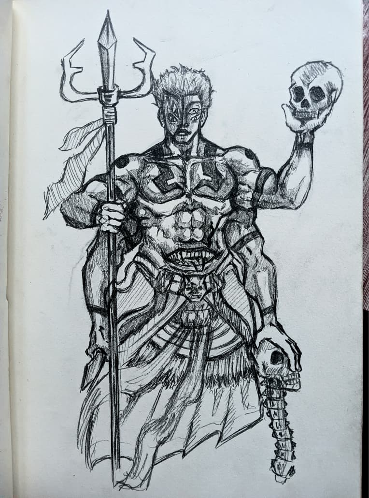

Projects
Web Development

Profile Website
Website profile modern dengan desain indah, informatif dan responsive.

Art Local
Website untuk menampilkan karya seni lokal dengan desain modern.

Portofolio Website
Website portofolio modern dengan desain clean dan responsive.

Website Pesan Romantis
Website pesan romantis interaktif dengan musik romantis dan desain yang unik.

Website Mini Games Valentine
Website mini games interaktif untuk hari valentine dengan desain unik.
Illustration

Scenery Artwork
Koleksi desain latar belakang dan pemandangan dengan detail visual menarik.

Digital Illustration
Koleksi ilustrasi digital dengan gaya visual modern dan eksplorasi warna menarik.

Traditional Illustration
Koleksi ilustrasi tradisional dengan teknik dan media yang beragam.